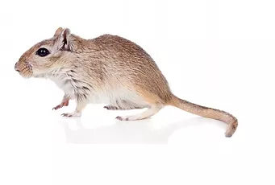

Nous sommes une entreprise professionnelle se concentrant sur la dératisation, que ce soit pour les particuliers, les professionnels ou les industries. En se basant sur les traces et les dommages causés par les rongeurs, nous identifions le parasite pour déterminer le type d’appât ou de piégeage le plus efficace et le plus adapté aux lieux et à l’environnement. Notre intervention est rapide, discrète et sécuritaire pour les personnes et les animaux domestiques. Le résultat est assuré et efficace à long terme. Nos produits sont inodores, certifiés et testés par des laboratoires indépendants, pouvant être vraiment efficace pour la dératisation.
